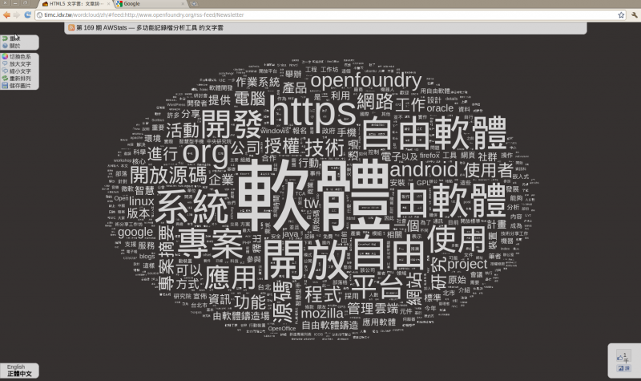

使用 Open Web 技術實作 HTML5 中文文字雲

這個「玩具」是來自於一個很直覺的想法。我參與 Mozilla Taiwan 的 Firefox 在地化工作多年，因為機緣而對 NLP 有粗淺的認識，於是就覺得：「既然介面上使用的詞彙就是那些，把程式碼內所有詞彙送進 N-gram 分析會得到什麼有用的結果？能幫忙提升介面翻譯品質嗎？」這些問題目前還懸而未決，但卻因而促成 N-gram 演算法成為製作文字雲時萃取資料的核心技術。

▲ 圖1 使用文章詞彙分析機計算，專屬於 OSSF 電子報的文字雲。
【HTML5 文字雲－文章詞彙分析機】
體驗網址：https://timc.idv.tw/wordcloud/
原始碼：https://github.com/timdream/wordcloud
授權方式：MIT 授權
使用技術：自製的 N-gram 演算法（使用於製作中文文字雲）、Porter Stemming Algorithm（使用於製作英文文字雲）、HTML5 canvas、HTML5 FileReader API、HTML5 Web Workers API、Javascript 1.6 新 Array 函式
讀取檔案
以前網頁對檔案唯一能做的事情是在表單內直接將檔案傳送至伺服器，所有的修改都要在遠端處理。新的瀏覽器提供了 FileReader 介面，可以直接存取使用者選擇的檔案。「文字雲」使用此介面讓使用者直接在本機端分析文字檔；而為了趣味，我也接上了 Google Feed API，利用它的功能讀取使用者選擇的 RSS Feed，產生各個部落格或是微網誌的詞彙地圖。
分析文字
中文是相對模糊的自然語言，它沒有特定的 dump word（唯一勉強算是的只有「的」），或是非常明確的動／名詞用字區分。不過也就是利用了這樣的特性，我採用的演算法是完全不做任何考慮的 N-gram 切詞：以 N 個詞為單位收集字的組合，再直接計算其數量。例如「資訊創新研究中心自由軟體鑄造場」可以被拆成「資訊」、「訊創」、「創新」、「新研」、「研究」、「資訊創」、「訊創新」、「創新研」、「資訊創新」、「訊創新研」、「創新研究」......等。
接著，在計算各個詞組的出現頻率，正確的詞例如「自由」、「軟體」的頻率會相較於比不正確的詞彙（例如「訊創」）來的多，排列之後即可萃取文章的常用詞彙。
要增加精確度可以另外考慮使用字典比對，但在評估之後因為成本效益所以就不採用了。一個堪稱完整的字典檔，像是新酷音的詞彙表，轉檔之後也是約 2MB，二十萬詞彙的 JSON Object。另外，若使用字典檔做過濾，就會錯過顯著但是不在字典裡的詞彙，反而會失去資訊。
英文的話，除了要過濾 dump word 以外，還要針對名詞、動詞的型態進行資料正規化 (normalization)。也剛好，Porter Stemmer 演算法網站上直接提供了 Javascript 的程式碼，可以直接採用。
背景執行緒
Web Workers 是瀏覽器提供的新 API，可以將計算工作放到背景的執行緒 (thread)。前景的執行緒在計算時瀏覽器會停止對使用者反應，用於大量計算時有礙使用者體驗。文字雲分析文字所需的時間取決於文字的量，因此適合放到 Web Workers 來做計算。至於沒有提供 Web Workers 介面的瀏覽器（例如 IE9 或是 Mobile Webkit），我另外寫了一個應用 iframe 提供 scope 的 Wrapper ；程式在這些瀏覽器還是會在前景執行，但可以不經修改直接在 Wrapper 裡運作。
Canvas 繪圖
最後的繪圖動作則應用 HTML5 瀏覽器提供的「canvas」元素。Canvas 是 2D 的繪圖介面，可以使用 Javascript 呼叫函式在其上貼圖、畫幾何形狀、著色、印文字等等。要在畫面上畫文字雲，用的當然就是印文字的功能了。但，文字雲另外要做的事情是在每次畫完文字時去取得畫完的像素，記錄筆劃的位置，以備之後有更小的字可以卡在大字的空隙裡面。
效能
有了 Web Workers 之後，唯一的效能問題卡在不能移動到背景執行的 canvas 繪圖。Canvas 最花時間的部份在於「取得像素」，因為在使用硬體加速的瀏覽器上，繪圖直接存取 GPU 指令，很快，但取得結果就要一路從 GPU 要回來，反而是相對慢的動作。
在這邊要特別提起 Mozilla 方面的協助。Firefox 4 Party 時來訪的講者 Chris Jones 提醒我取得像素的函式無論指定多小的範圍，背後所需的時間是一樣的（因為跟 GPU 要資料會一次要整張 canvas）；基於這個特性，我調整了文字雲背後的邏輯讓程式一次就把需要範圍的資料要到。
結語：HTML5 瀏覽器技術與 Open Web 平台
大家對於開發 Web 應用程式，以前總有不少的謬誤。但隨著近期的發展，許多印象已經被打破了，例如：
*雖然跨平台，但是需要處理的瀏覽器歧異太多：瀏覽器的差異主要是 IE8 以下，只要進行很簡單的物件偵測就可以確定瀏覽器是否可執行需要的功能。
*雖然很方便，但是能用的本機端功能很少：瀏覽器已經提供越來越多的介面，可以繪圖、背景執行、存取檔案......。
*程式效能不好：瀏覽器已經越來越快了，過去幾年各家 Javascript interpreter 應用了許多進階的最佳化技巧讓效率接近原生編譯程式。
作為應用程式開發平台，我認為 Web 提供了各家 OS 或是手機平台以外的額外選擇。更重要的，它不是被某家單一廠商挾持的平台，是唯一開放的應用程式平台。只要詳細調整 UI，就可以在各個不同的裝置執行，提供不同的使用經驗。文字雲還有其他的範例網站，例如 Mozilla Demos 都是很好的範例。
作者簡介
timdream，Web Developer。目前在出版業服務，擔任數位內容的規劃工作。在 MozTW 參與 Firefox 與相關軟體的在地化開發與宣傳活動，是 Open Web 的信徒。這兩年參與了開源人年會的籌備志工工作。相關資訊請洽 https://timc.idv.tw。